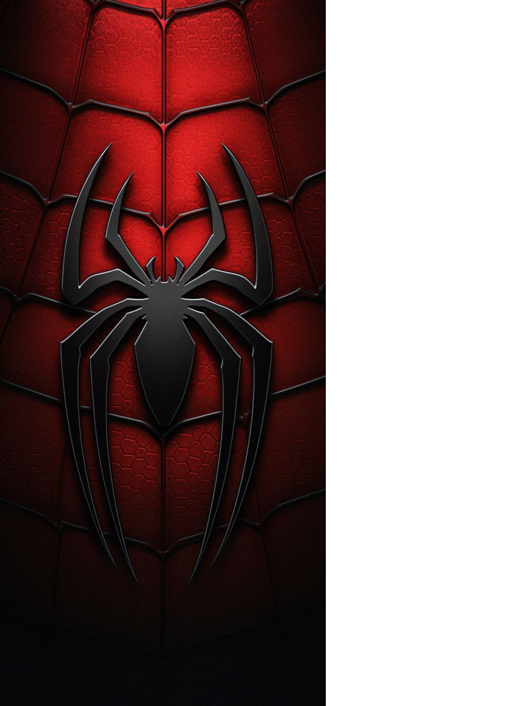

<!DOCTYPE html>
<html lang="en">
<head>
    <meta charset="UTF-8">
    <meta name="viewport" content="width=device-width, initial-scale=1.0">
    <title>Document</title>
</head>
<body>
    
</body>
</html>


<h1>personaje1 hombre araña</h1>

La picadura: Peter Parker, un estudiante de secundaria, es picado por una araña radiactiva durante una exhibición científica en su escuela.
Nuevas habilidades: Tras la picadura, obtiene agilidad, fuerza, reflejos y la capacidad de aferrarse a las paredes proporcionales a las de una araña, además de un "sentido arácnido" que le advierte del peligro.
Lanzatelarañas: Gracias a su inteligencia científica, desarrolla un dispositivo que lanza telarañas para moverse por la ciudad. 
El camino a héroe
Egoísmo inicial: Al principio, usa sus poderes para ganar dinero en luchas de lucha libre, lo que le da fama pero también un gran ego.
La tragedia: Su actitud egoísta lo lleva a permitir que un ladrón escape, solo para descubrir más tarde que ese mismo criminal mató a su tío Ben.
La gran responsabilidad: Este suceso lo marca para siempre y lo impulsa a usar sus poderes para proteger a los inocentes, adoptando el lema: "De un gran poder viene una gran responsabilidad". 
Vida como Spider-Man
La doble vida: Para poder mantener a su tía May, se convierte en un fotógrafo para el diario Daily Bugle, vendiendo fotos de sí mismo luchando contra los villanos.
Enemigos: Se enfrenta a numerosos supervillanos, como el Duende Verde, el Doctor Octopus, Electro y el Sandman.
Relaciones: Su vida personal se complica, incluyendo la trágica muerte de Gwen Stacy y su relación con Mary Jane Watson. 



<!doctype html>
<html lang="es">
<head>
  <meta charset="utf-8">
  <meta name="viewport" content="width=device-width, initial-scale=1">
  <title>Lista sobre Spider-Man</title>
  <style>
    :root{--bg:#0b1220;--card:#0f1a2b;--accent:#e63946;--text:#e6eef8}
    body{font-family:Inter, system-ui, -apple-system, 'Segoe UI', Roboto, 'Helvetica Neue', Arial; background:linear-gradient(135deg,var(--bg),#071021);color:var(--text);margin:0;padding:40px;}
    .container{max-width:860px;margin:0 auto;padding:28px;background:linear-gradient(180deg,rgba(255,255,255,0.02),transparent);border-radius:16px;box-shadow:0 10px 30px rgba(2,6,23,0.6)}
    h1{font-size:2rem;margin:0 0 8px;color:var(--accent);}
    p.lead{margin:0 0 18px;opacity:0.9}
    ul, ol{line-height:1.6}
    .card{background:var(--card);padding:18px;border-radius:12px;margin:14px 0}
    .small{font-size:0.9rem;opacity:0.8}
    table{width:100%;border-collapse:collapse;margin-top:12px}
    th, td{border:1px solid rgba(230,238,248,0.2);padding:8px;text-align:left}
    th{background:rgba(230,238,248,0.1)}
    a{color:var(--accent);text-decoration:none}
    a:hover{text-decoration:underline}
    footer{margin-top:18px;font-size:0.85rem;opacity:0.75}
    @media (max-width:520px){body{padding:18px}.container{padding:18px}}
  </style>
</head>
<body>
  <div class="container">
    <h1 id="inicio">Spider-Man — Lista informativa</h1>
    <p class="lead">Pequeña recopilación de datos y listas sobre Spider-Man (en español).</p>

    <nav>
      <ul>
        <li><a href="#datos">Datos generales</a></li>
        <li><a href="#villanos">Villanos</a></li>
        <li><a href="#peliculas">Películas</a></li>
        <li><a href="#tabla">Tabla de actores</a></li>
        <li><a href="#curiosidades">Curiosidades</a></li>
      </ul>
    </nav>

    <div class="card" id="datos">
      <h2>Datos generales</h2>
      <ul>
        <li><strong>Nombre real:</strong> Peter Parker (el más conocido).</li>
        <li><strong>Primera aparición:</strong> <em>Amazing Fantasy</em> #15 (1962).</li>
        <li><strong>Creadores:</strong> Stan Lee y Steve Ditko.</li>
        <li><strong>Poderes:</strong> fuerza sobrehumana, agilidad, sentido arácnido, trepar paredes.</li>
        <li><strong>Debilidades:</strong> responsabilidad moral, vida personal complicada.</li>
      </ul>
    </div>

    <div class="card" id="villanos">
      <h2>Villanos principales</h2>
      <ul>
        <li>Norman Osborn / Green Goblin</li>
        <li>Doctor Octopus (Otto Octavius)</li>
        <li>Venom (Eddie Brock y otros simbiontes)</li>
        <li>Sandman</li>
        <li>Electro</li>
        <li>Kingpin</li>
      </ul>
    </div>

    <div class="card" id="peliculas">
      <h2>Películas y adaptaciones</h2>
      <ol>
        <li>Trilogía de Sam Raimi (2002–2007)</li>
        <li><em>The Amazing Spider-Man</em> (2012–2014)</li>
        <li>Spider-Man en el MCU (Tom Holland, desde 2016)</li>
        <li>Animadas: <em>Spider-Man: Into the Spider-Verse</em> (2018) y secuelas</li>
      </ol>
    </div>

    <div class="card" id="tabla">
      <h2>Tabla de actores principales</h2>
      <table>
        <thead>
          <tr>
            <th>Actor</th>
            <th>Versión / Universo</th>
            <th>Años de participación</th>
          </tr>
        </thead>
        <tbody>
          <tr>
            <td>Tobey Maguire</td>
            <td>Trilogía de Sam Raimi</td>
            <td>2002–2007</td>
          </tr>
          <tr>
            <td>Andrew Garfield</td>
            <td>The Amazing Spider-Man</td>
            <td>2012–2014</td>
          </tr>
          <tr>
            <td>Tom Holland</td>
            <td>Marvel Cinematic Universe (MCU)</td>
            <td>2016–presente</td>
          </tr>
        </tbody>
      </table>
    </div>

    <div class="card" id="curiosidades">
      <h2>Curiosidades</h2>
      <ul>
        <li>El lema clásico: “Un gran poder conlleva una gran responsabilidad”.</li>
        <li>Existen múltiples versiones: Miles Morales, Spider-Gwen, Spider-Man 2099, etc.</li>
        <li>Spider-Man fue uno de los primeros superhéroes adolescentes con problemas reales.</li>
      </ul>
      <p><a href="#inicio">Volver al inicio ↑</a></p>
    </div>

    <footer>
      <p>Visita el sitio oficial de <a href="https://www.marvel.com/characters/spider-man-peter-parker" target="_blank">Marvel sobre Spider-Man</a> para más información.</p>
    </footer>
  </div>
</body>
</html>